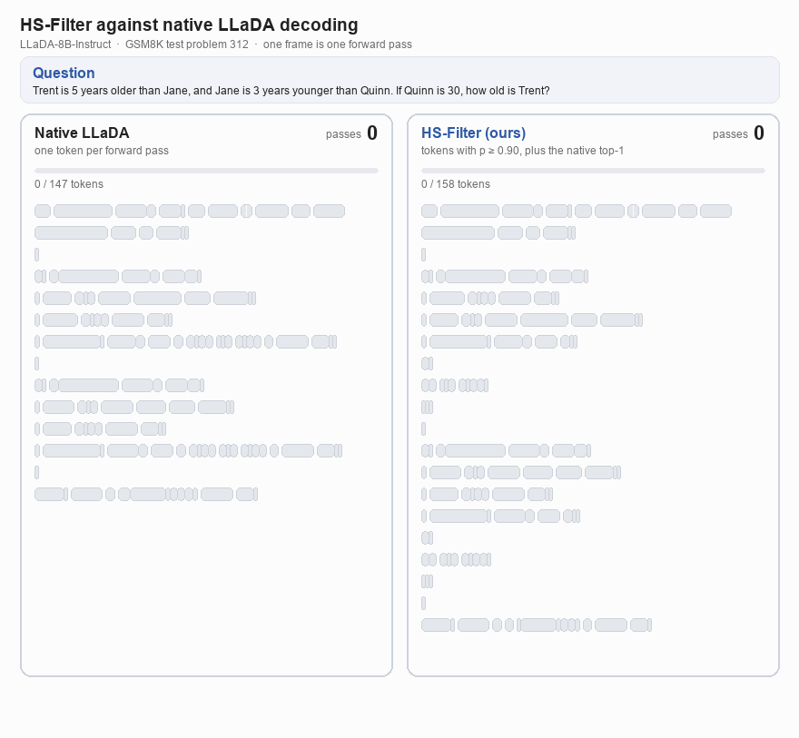
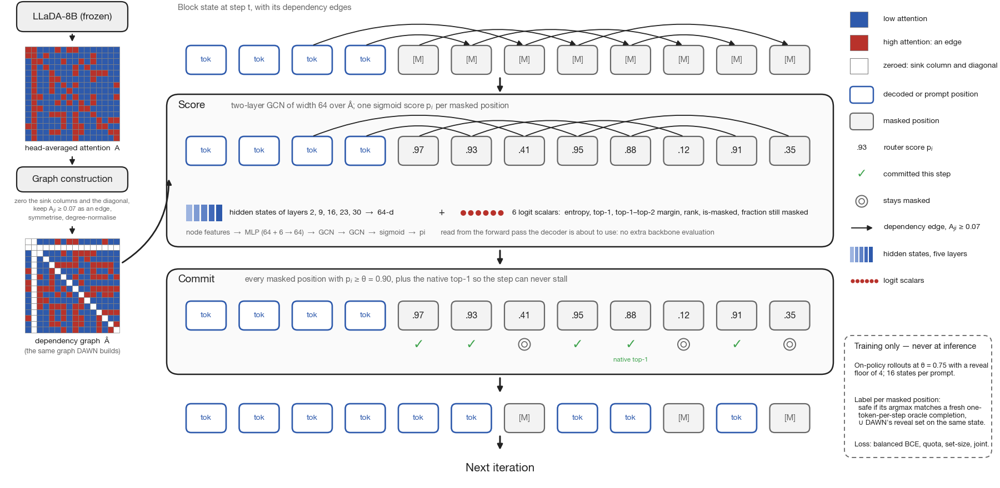

HS-Filter against native decoding
One prompt decoded twice. Native LLaDA commits one token per forward pass and needs 148 passes. HS-Filter, the heavier router of the paper, commits several at once and finishes in 37. Both reach the correct result, 32.

A real trace on GSM8K test problem 312 (LLaDA-8B-Instruct), not a mock-up. The problem was picked because its solution is short.
How it works
A masked diffusion language model writes text by unmasking positions over several forward passes, so the cost of a response is the number of passes. Native decoding commits one position per pass. We train two small routers, Feature-Filter and the heavier HS-Filter, that choose at every pass which masked positions can be committed together.
Graph
The attention of the pass gives a sparse graph of which positions depend on which, the same graph DAWN builds.
Score
A small network scores every masked position by message passing on that graph. Feature-Filter reads only six signals per position: confidence, entropy, and four statistics of the graph (in-mass, max-in, degree, degree-weighted confidence). HS-Filter, shown below, reads hidden states from five backbone layers and six logit scalars.
Commit
Feature-Filter acts in bulk only if some score clears a gate of 0.99. It then commits every position whose score, minus a penalty proportional to the share of its attention that points at tokens committed in the same step, exceeds 0.80. Otherwise it commits the native top-1 alone. HS-Filter commits every position scoring at least 0.90, plus the native top-1.

Results
Feature-Filter uses fewer forward passes than every baseline on both backbones: on average 48.7 against 52.6 for DAWN on LLaDA, and 52.7 against 63.3 for DAWN on Dream. Its mean accuracy is 0.5 points below the most accurate baseline (Fast-dLLM) on LLaDA and 1.7 points below it on Dream, differences of the same order as the evaluation's standard error. HS-Filter reaches 41.4 passes on LLaDA, the fewest of any row, but its mean accuracy is 4.0 points below Fast-dLLM's.
| Method | GSM8K | MATH | MBPP | HumanEval | Average | |||||||
|---|---|---|---|---|---|---|---|---|---|---|---|---|
| Acc ↑ | NFE ↓ | Acc ↑ | NFE ↓ | Acc ↑ | NFE ↓ | Acc ↑ | NFE ↓ | Acc ↑ | NFE ↓ | tok/s ↑ | Speedup ↑ | |
| LLaDA-8B-Instruct | ||||||||||||
| Native | 77.33 | 237.4 | 38.42 | 246.7 | 29.40 | 188.2 | 35.98 | 247.1 | 45.28 | 229.9 | 33 | 1.00× |
| Fast-dLLM | 77.71 | 77.7 | 38.28 | 96.0 | 35.40 | 39.5 | 38.41 | 50.7 | 47.45 | 66.0 | 92 | 2.79× |
| DAWN | 76.88 | 60.1 | 37.54 | 77.4 | 34.20 | 32.4 | 38.41 | 40.7 | 46.76 | 52.6 | 113 | 3.42× |
| L2P | 77.86 | 62.9 | 37.52 | 78.2 | 30.40 | 56.1 | 35.37 | 78.2 | 45.29 | 68.8 | 110 | 3.33× |
| DAPD | 72.40 | 108.9 | 34.26 | 118.8 | 33.20 | 63.7 | 42.07 | 74.6 | 45.48 | 91.5 | 42 | 1.27× |
| HS-Filterours | 75.51 | 52.3 | 34.86 | 56.3 | 31.80 | 27.3 | 31.71 | 29.6 | 43.47 | 41.4 | 112 | 3.39× |
| Feature-Filterours | 78.09 | 56.1 | 38.14 | 72.4 | 33.60 | 29.4 | 37.80 | 36.8 | 46.91 | 48.7 | 114 | 3.45× |
| Dream-v0-Instruct-7B | ||||||||||||
| Native | 76.19 | 137.7 | 45.86 | 252.9 | 54.00 | 124.8 | 59.15 | 177.2 | 58.80 | 173.2 | 49 | 1.00× |
| Fast-dLLM | 76.50 | 58.3 | 45.70 | 115.6 | 55.80 | 59.9 | 60.37 | 87.2 | 59.59 | 80.2 | 100 | 2.04× |
| DAWN | 73.84 | 47.7 | 44.88 | 94.3 | 55.40 | 39.2 | 55.49 | 72.1 | 57.40 | 63.3 | 113 | 2.31× |
| L2P† | 77.56 | 149.8 | 45.38 | 189.8 | 55.40 | 69.7 | 54.88 | 168.1 | 58.30 | 144.3 | – | – |
| Feature-Filterours | 75.89 | 44.4 | 44.70 | 72.2 | 55.00 | 27.6 | 56.10 | 66.6 | 57.92 | 52.7 | 121 | 2.47× |
Full test sets, one setting per method across the four benchmarks. NFE is the mean number of forward passes per example (lower is better), tok/s is decoding throughput in tokens per second, and speedup is that throughput divided by the native decoder's on the same backbone. Averages are over the four benchmarks. Shaded rows are ours, and bold marks a value better than every baseline on that backbone. † L2P's Dream row predates the timed harness, so it has no throughput. DAPD was not run on Dream, and HS-Filter was not trained for it.